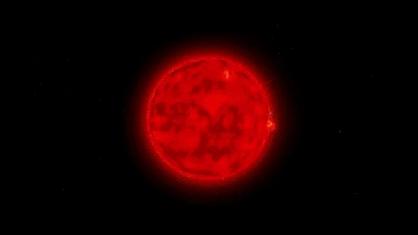

Boas vindas aventureiro!
Pronto para uma viagem pela vastidão do universo?
Sobre Outer Wilds
Outer Wilds é um jogo indie de mistério de mundo aberto sobre um sistema solar preso em um loop temporal inacabável. O jogo permite que você faça o que quiser sem estar preso em alguma missão para o jogo prosseguir, você que faz a história acontecer e investiga o passado do sistema solar livremente.
Outer Wilds Ventures
A Outer Wilds Ventures é
uma organização
Hearthian
dedicada a aprender sobre o Sistema Solar e sua história. A organização foi fundada por
Hornfels, Gossan, Slate e Feldspato. O paradeiro deles é desconhecido após terem saído com a missão de
desvendar os mistérios do Sistema Solar. Hoje em dia é possível ouvir sons de instrumentos que eram
tocados pelos mesmos por meio de de equipamentos de astronautas.
Os Hearthians é a única (ou acreditam ser) raça existente no sistema solar, sua pele é azul e eles
possuem quatro olhos, três dedos, não possuem pelos e sua característica mais marcante são suas
grandes e pontudas orelhas.
Assar marshmallows, preparar nave, e já!
Recanto lenhoso
Recanto lenhoso
é o planeta natal dos Hearthians, onde é um lugar muito aconchegante que há uma comunidade muito unida
e que todos se conhecem, mas não se engane, o Recanto também esconde mistérios que revelam um
longínquo passado de antigas civilizações e seus antepassados.
- 🔸Oxigênio
- 🔸Observatório e museu do sistema solar
- 🔸Terra natal Hearthians
Gêmeos da Ampulheta

Gêmeos da Ampulheta
é um par de planetas que se orbitam entre si e são dependentes um do outro. Um deles é o Gêmeo Cálido e o outro é o
Gêmeo Cinzento. Com o
passar do tempo, o Gêmeo cinzento transfere a areia para o Gêmeo Cálido, o que faz com que os segredos
de um deles vá se escondendo, e do outro, revelando.
- 🔸Transferência de areia
- 🔸Torres
- 🔸Tempo limitado para explorar
Vale Incerto
Vale Incerto
é um planeta rochoso e oco, e que possui um buraco negro dentro de si.
Esse planeta possui uma lua vulcânica chamada Luzeiro do Vale, que vai
destruindo o planeta aos poucos, fazendo com que lugares que escondem grandes segredos sejam
inacessíveis se você não chega a tempo.
- 🔸Buraco negro perigoso
- 🔸Cristais gravitacionais
- 🔸Instabilidade
Profundezas do Gigante
Profundezas do Gigante
é um planeta gigante aquático, possuindo pequenas ilhas que estão livremente nas águas do planeta,
vários tornados, e uma gravidade fortíssima. Em alguns momentos suas ilhas são consumidas pela água e
devolvidas para o lugar de difícil locomoção, onde tem uma entrada para seu núcleo energizado de um
peciliar acesso.
- 🔸Instabilidade
- 🔸Tornados
- 🔸Núcleo Energizado
Abrolho Sombrio

Abrolho Sombrio
é um planeta que está infectado por uma grande trepadeira, um dos mistérios do jogo que você descobre
ao explorar. Seu interior é imenso e dificultoso para enxergar seu caminho a frente, onde você só
consegue ver luzes que pertencem a gigantes Peixes Tamboril que são cegos mas são guiados por qualquer
tipo de barulho.
- 🔸Difícil locomoção
- 🔸Perigoso
- 🔸Infectado
Lua Quântica
Lua Quântica
é um misterioso astro que se move para outro lugar toda vez que desviam o olhar, assim como todos os
artigos quânticos que se comportam da mesma forma e que emitem os mesmos sinais.
- 🔸Quântica
- 🔸Instável
- 🔸Difícil acesso
Mas nada disso importa, pois tudo acaba com...
Ou melhor, esse fim tem seu recomeço!